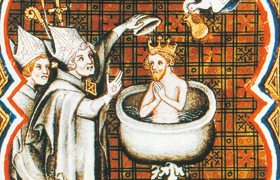

Lezione 5  Invasioni barbariche
Invasioni barbariche

Insediandosi nei territori dell’Impero romano, le popolazioni germaniche furono notevolmente influenzate dai valori, dagli usi e dai costumi dei popoli che vi trovarono. Grandi furono le trasformazioni: i germani da nomadi diventarono sedentari, da guerrieri e contadini diventarono proprietari terrieri. L’integrazione – più o meno riuscita – tra popolazioni diverse diede vita ai regni romano-barbarici. Il primo fu quello dei visigoti, nella Gallia sudoccidentale. Seguirono quello dei suebi (parte nordoccidentale della penisola iberica), dei vandali (coste nordafricane), dei burgundi (Gallia settentrionale), poi il dominio di Odoacre e il Regno degli ostrogoti (Italia), il Regno dei franchi (Gallie). Il rapporto che le diverse popolazioni germaniche instaurarono con le popolazioni locali e soprattutto con le aristocrazie e l’episcopato cattolico, fu di grande importanza nella storia dei singoli regni, tanto da decidere il loro destino. Fra tutti, quello dei franchi risultò essere il regno più riuscito: divenne il più grande, ma soprattutto il più solido dei regni romano-barbarici. I Franchi erano organizzati in tanti piccoli regni, che si unirono e ampliarono sotto la guida di un re, Clodoveo, fondatore della dinastia dei Merovingi. La loro espansione fu favorita dai buoni rapporti instaurati con la Chiesa romana e la sua gerarchia. Inizialmente i franchi mantennero la loro fede politeista, poi passarono al cristianesimo. Clodoveo si convertì nel 508 nella cattedrale di Reims, e insieme a lui furono battezzati da san Remigio, vescovo di Reims, tremila guerrieri franchi. La conversione rese il Regno dei franchi molto più stabile degli altri regni romano-barbarici: il re ebbe responsabilità maggiori e il regno acquisì forme accentrate di potere di carattere statale.